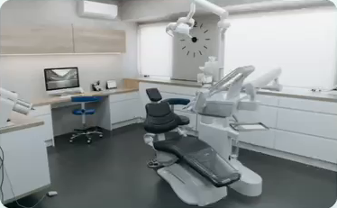

Explicaram cada etapa antes de começar. Saí sabendo exatamente o que seria feito.
MRMarina R.Implante · Aracaju
Da primeira avaliação ao sorriso final: tecnologia atual, atendimento
humano e um plano de tratamento feito para o seu caso.
Explicaram cada etapa antes de começar. Saí sabendo exatamente o que seria feito.
Meu filho perdeu o medo de ir ao dentista aqui. Isso não tem preço.
Terminei o aparelho no prazo combinado, sem nenhuma surpresa na conta.
Fui atendida de urgência num sábado e resolveram na hora.
Reposição da raiz e da coroa, com planejamento digital antes da cirurgia.
Escolha um tratamento e veja prazo, número de consultas e como é a recuperação.
Cada boca é diferente, e o plano de tratamento também deveria ser. Aqui você
resolve tudo no mesmo lugar, com a mesma equipe acompanhando seu histórico
do começo ao fim.

Consultórios equipados para diagnóstico digital, esterilização com protocolo rigoroso e uma equipe que explica cada etapa antes de executar. O objetivo é simples: você entender o que está acontecendo com a sua boca.
O conforto durante o atendimento faz parte do planejamento. A equipe explica os cuidados, a anestesia quando indicada e a recuperação esperada para o seu procedimento antes de começar.
O valor depende da avaliação e do tratamento indicado para você. O plano é apresentado por escrito, com as etapas e as opções de pagamento esclarecidas antes de iniciar.
Entre em contato com a clínica e informe seu convênio para consultar a disponibilidade e as condições de atendimento.
É uma conversa para conhecer você, ouvir o que está sentindo e avaliar seu sorriso. A equipe explica os próximos passos e os exames que podem ser necessários.
Sim. Temos atendimento voltado para crianças, com consultas mais curtas e linguagem adequada à idade. A primeira visita pode ser só para conhecer o consultório, sem nenhum procedimento — costuma ser o que evita o medo lá na frente.
Entre em contato e explique o que está acontecendo para consultar os horários disponíveis e receber orientação da equipe.
Estamos no bairro 13 de Julho, em Aracaju, com estacionamento por perto e acesso sem escadas. Se preferir resolver antes pelo telefone, também funciona.
Informe seus dados e a data de preferência.
A equipe acompanha cada solicitação pelo painel
e confirma a disponibilidade antes do agendamento.